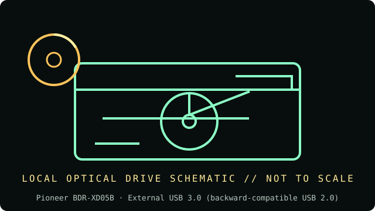

[ INDIVIDUAL COMPONENT // OPTICAL DRIVES ]
Pioneer BDR-XD05B
External slim USB Blu-ray/DVD/CD writer in black finish. The B suffix is part of the exact product identity. Specifications below are tied to the exact model identifiers and cited documentation; nearby product families may differ.

IDENTIFICATION: Pioneer BDR-XD05B · confirm full model/revision marking and compare it with the cited source before assigning a host or media capability.
Verified specifications
| Catalog subcategory | External Blu-ray drives |
|---|---|
| Exact product identifier | Pioneer BDR-XD05B |
| Era / product type | External slim 6× Blu-ray writer |
| Read/write and media | Writes BD-R (single/dual layer) up to 6×, BD-RE up to 2×, DVD±R up to 8×, DVD±R DL up to 6×, DVD+RW up to 8×, DVD-RW up to 6×, DVD-RAM up to 5×, CD-R and CD-RW up to 24×; reads BD-ROM up to 6×, DVD-ROM up to 8× and CD-ROM up to 24×. BD-XL layer speeds vary by media. |
| Interface and mechanics | External USB 3.0 (backward-compatible USB 2.0); tray-load compact shell, 133 × 133 × 14.8 mm, approx. 230 g. |
| Variant and host cautions | USB 3.0 is needed for rated throughput; USB 2.0 fallback may reduce performance. Confirm exact BDR-XD05B versus other XD05 variants, cable/power behavior, OS software, firmware and region/media support. |
Optical-media preservation notes
Use the model’s compatibility list and proper BD-R/RE media; verify all writes by readback and checksum, retain the drive/firmware used, and keep original discs in protective cases away from heat and sunlight.
- Handle discs by the edge or center hub; do not write on the data side or add adhesive labels over the recording surface.
- Store in a clean, cool, dry, dark environment in protective cases. Keep original media unmodified and make verified working images for access.
- Retain checksums, drive model/firmware, software, read errors, media type, and acquisition/handling history with each preservation image.
Identification and host checks
- Confirm the complete manufacturer label, model suffix, revision, serial/date code, and supplied bezel, cable, adapter, or bracket before installation.
- USB 3.0 is needed for rated throughput; USB 2.0 fallback may reduce performance. Confirm exact BDR-XD05B versus other XD05 variants, cable/power behavior, OS software, firmware and region/media support.
- Use the model’s compatibility list and proper BD-R/RE media; verify all writes by readback and checksum, retain the drive/firmware used, and keep original discs in protective cases away from heat and sunlight.
Manufacturer, standards and preservation sources
- Pioneer — BDR-XD05 operating instructionsModel-family manual for USB connection, supported media, speeds and dimensions; B suffix/region should be matched to product label.
- Pioneer — BDR-XD05B manual listingExact BDR-XD05B manual/product identification.
- Blu-ray Disc Association — format informationBlu-ray format context for BD-R/BD-RE; media-layer variant remains decisive.
- NIST — Care and handling of CDs and DVDs: Guide for librarians and archivistsPreservation practice for optical discs; follow applicable media-specific guidance and keep redundant verified copies.
- Library of Congress — Sustainability of Digital FormatsFormat-sustainability reference for planning access, preservation, and migration of digital content.
Manufacturer ratings describe supported media and maximum speeds, not guaranteed read quality from a particular aged disc. Standards and preservation guidance do not certify this drive or a media batch.